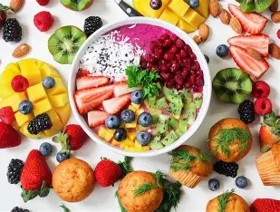
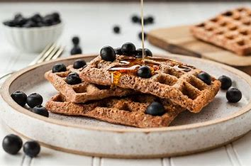

Público-Alvo
Este site foi criado para atender pessoas que buscam uma alimentação saudável, segura e adaptada às suas necessidades específicas.
Pessoas com diabetes: receitas com controle de carboidratos e baixo índice glicêmico, pensadas para manter a glicemia equilibrada sem abrir mão do sabor

Indivíduos com hipertensão, colesterol alto ou outras condições cardiovasculares:opções com baixo teor de sódio, gorduras saudáveis e ingredientes funcionais.

Quem possui intolerâncias ou alergias alimentares:receitas sem glúten, sem lactose e com alternativas para ingredientes comuns.

Pessoas em processo de reeducação alimentar ou em dietas específicas:seja para emagrecimento, ganho de massa muscular ou bem-estar geral.
Cuidadores, familiares e profissionais da saúde:que buscam ideias práticas e seguras para preparar refeições para seus pacientes ou entes queridos.
